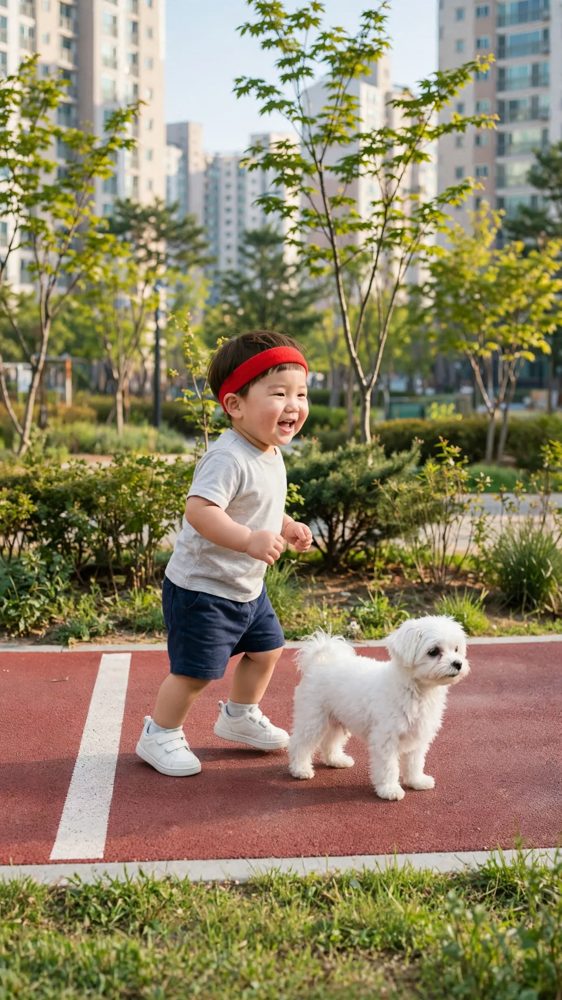
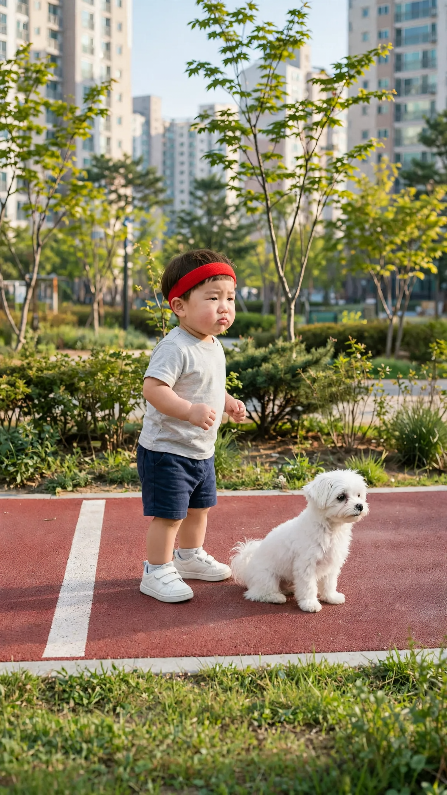
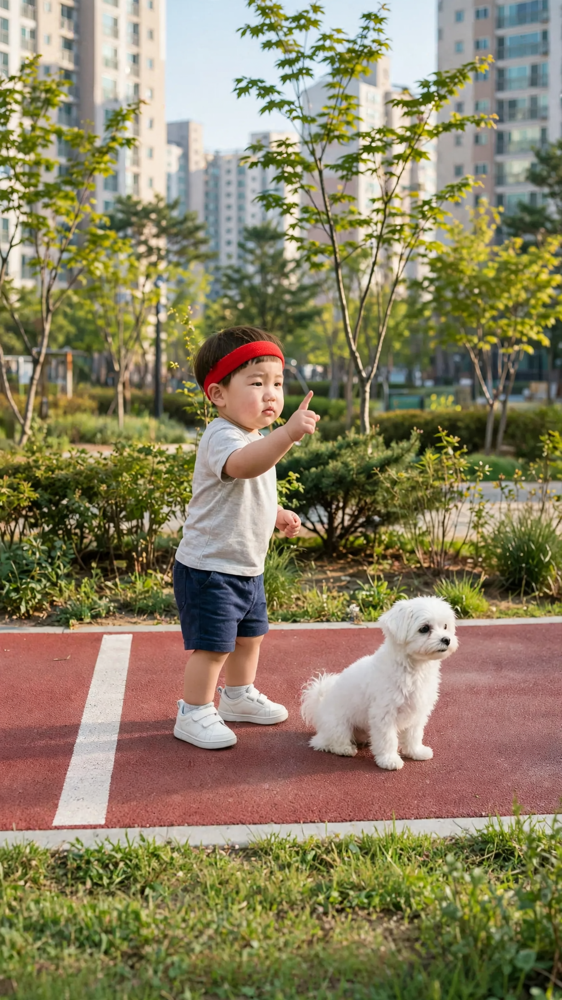
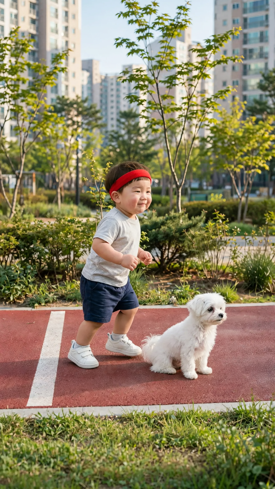

🎬 콩이와 달리기 시합
4컷 · 28초 · 모든 컷 도윤이 혼자 말함 · 실패하면 같은 걸로 2~3번 다시 걸기
1번 컷
⏱ 6초도윤: 「준비, 땅!」


[Character Action & Continuity] Realistic Korean slice-of-life short video clip. a jogging path in a Korean apartment complex park, seen from the side in Korea. Maintain exact appearance from start frame: a 24-month-old Korean toddler boy wearing a light gray short-sleeve t-shirt, navy shorts, small white sneakers and a red sports headband. Scale: a small 24-month-old toddler build with natural proportions. Fixed positions: Start line on the left; the race runs to the right edge. [0-1s] Doyoon shouts his line right away [1-4s] Kongi dashes along the path to the right and out of the frame as Doyoon starts toddling after it [4-6s] Doyoon slows down on the path, mouth open in surprise, staring at the right edge [Dialogue Script & Emotion] 도윤 (단독 발화, 0초부터 바로): (신나게 크게 외치며) "준비, 땅!" [Audio & Voice Specifications] Single Voice Track Only: Definite 18 to 24-month-old Korean INFANT TODDLER boy voice. Low-pitched, cute, raspy little boy toddler voice. Strictly NOT a school-age child, NOT female. Sound Format: Solo toddler voice in a quiet room. Background Sound: Quiet indoor room tone. Continuous steady indoor room air. [Technical Directives] 카메라: 옆에서 본 출발선의 도윤이와 콩이 미디엄 샷. 카메라 고정. 화면: 도윤이와 방만 보인다. 벽과 가구 표면은 무늬 없이 비어 있다. 도윤이 입모양 100% 완벽 립싱크.
2번 컷
⏱ 8초도윤: 「다시 해!」


[Character Action & Continuity] Realistic Korean slice-of-life short video clip. a jogging path in a Korean apartment complex park, seen from the side in Korea. Maintain exact appearance from start frame: a 24-month-old Korean toddler boy wearing a light gray short-sleeve t-shirt, navy shorts, small white sneakers and a red sports headband. Scale: a small 24-month-old toddler build with natural proportions. Fixed positions: Start line on the left; the race runs to the right edge. [0-2s] Doyoon pouts and says his line right away [2-5s] Doyoon suddenly runs off to the right before any signal while Kongi still sits [5-8s] Kongi springs up, zooms past Doyoon and runs out of the right edge first [Dialogue Script & Emotion] 도윤 (단독 발화, 0초부터 바로): (입을 삐죽 내밀고 분하다는 듯) "다시 해!" [Audio & Voice Specifications] Single Voice Track Only: Definite 18 to 24-month-old Korean INFANT TODDLER boy voice. Low-pitched, cute, raspy little boy toddler voice. Strictly NOT a school-age child, NOT female. Sound Format: Solo toddler voice in a quiet room. Background Sound: Quiet indoor room tone. Continuous steady indoor room air. [Technical Directives] 카메라: 옆에서 본 출발선의 도윤이와 콩이 미디엄 샷. 카메라 고정. 화면: 도윤이와 방만 보인다. 벽과 가구 표면은 무늬 없이 비어 있다. 도윤이 입모양 100% 완벽 립싱크.
3번 컷
⏱ 6초도윤: 「콩이야, 시작하면 달려야지.」


[Character Action & Continuity] Realistic Korean slice-of-life short video clip. a jogging path in a Korean apartment complex park, seen from the side in Korea. Maintain exact appearance from start frame: a 24-month-old Korean toddler boy wearing a light gray short-sleeve t-shirt, navy shorts, small white sneakers and a red sports headband. Scale: a small 24-month-old toddler build with natural proportions. Fixed positions: Start line on the left; the race runs to the right edge. [0-4s] Doyoon raises one finger at Kongi and says his line right away, like a strict coach [4-6s] Kongi tilts its head and blinks up at Doyoon [Dialogue Script & Emotion] 도윤 (단독 발화, 0초부터 바로): (코치처럼 진지하게 가르치듯) "콩이야, 시작하면 달려야지." [Audio & Voice Specifications] Single Voice Track Only: Definite 18 to 24-month-old Korean INFANT TODDLER boy voice. Low-pitched, cute, raspy little boy toddler voice. Strictly NOT a school-age child, NOT female. Sound Format: Solo toddler voice in a quiet room. Background Sound: Quiet indoor room tone. Continuous steady indoor room air. [Technical Directives] 카메라: 콩이를 보며 훈계하는 도윤이 얼굴이 보이는 미디엄 샷. 카메라 고정. 화면: 도윤이와 방만 보인다. 벽과 가구 표면은 무늬 없이 비어 있다. 도윤이 입모양 100% 완벽 립싱크.
4번 컷
⏱ 8초도윤: 「출발! 콩이야 이제 달려도 돼!」


[Character Action & Continuity] Realistic Korean slice-of-life short video clip. a jogging path in a Korean apartment complex park, seen from the side in Korea. Maintain exact appearance from start frame: a 24-month-old Korean toddler boy wearing a light gray short-sleeve t-shirt, navy shorts, small white sneakers and a red sports headband. Scale: a small 24-month-old toddler build with natural proportions. Fixed positions: Start line on the left; the race runs to the right edge. [0-3s] Doyoon runs right and out of the frame; Kongi stays sitting at the start line [3-6s] Doyoon leans back in from the right edge, faces the camera and shouts his line [6-8s] Doyoon grins as Kongi, at the start line, tilts its head, puzzled [Dialogue Script & Emotion] 도윤 (단독 발화, 3초에): (저 멀리서 신나게 외치며) "출발! 콩이야 이제 달려도 돼!" [Audio & Voice Specifications] Single Voice Track Only: Definite 18 to 24-month-old Korean INFANT TODDLER boy voice. Low-pitched, cute, raspy little boy toddler voice. Strictly NOT a school-age child, NOT female. Sound Format: Solo toddler voice in a quiet room. Background Sound: Quiet indoor room tone. Continuous steady indoor room air. [Technical Directives] 카메라: 옆에서 본 출발선 미디엄 샷. 카메라 고정. 화면: 도윤이와 방만 보인다. 벽과 가구 표면은 무늬 없이 비어 있다. 도윤이 입모양 100% 완벽 립싱크.